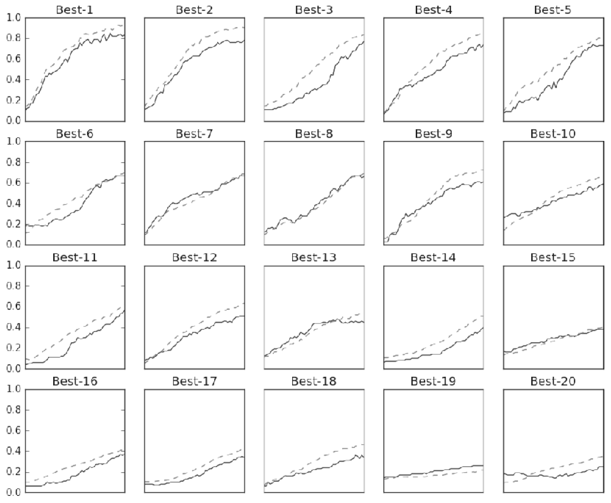

from dataset.mnist import load_mnist
from common.util import shuffle_dataset
(x_train, t_train), (x_test, t_test) = load_mnist()
# 훈련 데이터 뒤섞기
x_train, t_train = shuffle_dataset(x_train, t_train)
# 20%의 검증 데이터 얻기
validation_rate = 0.20
validation_num = int(x_train.shape[0] * validation_rate)
x_val = x_train[:validation_num]
t_val = t_train[:validation_num]
x_train = x_train[validation_num:]
t_train = t_train[validation_num:]14 Finding the appropriate hyperparameters
신경망 학습에서 가중치 등 매개변수(parameters)는 모델이 스스로 학습하여 찾아 가게 됩니다. 그러나 하이퍼파라미터1의 경우 사용자가 직접 설정해야 합니다.
1 hidden layer의 뉴런수, 배치크기, 학습률, 가중치 감소, 드롭아웃 비율 등
하이퍼파라미터는 모델의 성증과 직접적인 관련이 있어 어떻게 설정하는 가가 매우 중요합니다. 그러나 그 값을 찾는 것은 많은 시행착오를 요하게 되어 보다 요율적으로 찾는 방법을 소개하고자 합니다.
14.1 Validation Data
앞서 모델의 정확성 및 범용성을 높이기(오버피팅의 억제 등) 위하여 훈련 데이터와 시험 데이터를 나누어 사용하였습니다. 그러나 하이퍼파라미터의 다양한 값을 설정하고 시험하는 경우에는 시험 데이터를 사용해서는 안된다는 사실을 잘 기억해야 합니다.
하이퍼파라미터 시험시 시험 데이터를 사용하지 않는 이유는 시험 데이터를 사용하여 하이퍼파라미터를 조정하는 경우 시험 데이터에 과적합될 수 있기 때문입니다.
그래서 하이퍼파라미터를 조정할 때는 하이이퍼파라미터 전용 검증 데이터를 만들어 사용합니다.
신경망 학습시 사용하는 데이터의 종류
- 훈련 데이터: 매개변수 학습에 사용
- 검증 데이터: 하이퍼파라미터 성능평가에 사용
- 시험 데이터: 신경망의 정확성 및 범용성 성능평가에 사용
데이터셋에 따라 위와 같이 3가지 데이터로 분류되는 경우도 있지만 사용자가 직접 분류를 해야 하는 경우도 있습니다. 아래는 MNIST 데이터셋을 활용하여 훈련 데이터에서 20%의 검증 데이터를 얻는 방법을 구현해보겠씁니다.
14.2 Optimization for hyperparameters
앞서 하이퍼파라미터용 데이터인 검증 데이터를 획득하였습니다. 이제 본격적으로 검증 데이터를 이용하여 하이퍼파라미터의 최적 값을 찾는 과정을 살펴보겠습니다.
여기서 말하는 최적 값은 근사 값을 찾아가는 과정으로 최적 값이 존재하는 벙위를 좁혀 나가는 과정을 사용합니다2. 먼저 대략적인 범위3를 설정하여 정확도를 측정하는 절차를 반복 수행하여 최적 값의 범위를 줄여 나갑니다.
2 하이퍼파라미터 최적화시 오랜시간이 걸리는 바 결과 좋지 못한 값 또는 범위는 일찍 포기하는 것이 좋습니다.(예: 학습을 위한 에폭을 작게설정하여 1회 평가 시간 단축하는 등의 방법 사용)
3 대략적인 범위는 통항 Log scale(10의 지수승)로 지정
4 아래의 내용들이 다소 직관에 의존하는 느낌이 드는 경우 베이즈 최적화(Beyesian optimization)을 활용가능(Practical Nayesian Optimization of Machine Learing Algorithms)
위의 내용을 정리하면 아래의 단계를 따릅니다.4
- 0단계
- 하이퍼파라미터 값의 범위를 설정합니다.
- 1단계
- 설정된 범위에서 하이퍼파라미터의 값을 무작위로 추추합니다.
- 2단계
- 1단계에서 샘플링한 하이퍼파라미터 값을 사용하여 학습하고, 검증 데이터로 정확도를 평가합니다.(이 과정의 에폭은 작게 설정)
- 3단계
- 1단계와 2단계를 특정횟수(100회 등) 반복하며, 그 정확도의 결과를 보고 하이퍼파라미터의 범위를 좁히도록 합니다.
위의 절차에 따라 하이퍼파라미터의 최적화를 실시해보독 하겠습니다.
import numpy as np
weight_decay = 10** np.random.uniform(-8, -4)
lr = 10 ** np.random.uniform(-6, -2)위와 같이 가중치 감소 계수의 범위를 10^{-8}\sim10^{-4}로 설정하여 무작위로 추출하고, 학습률의 범위를 10^{-6}\sim10^{-2}로 설정하여 무작위로 추출해 보겠습니다.

위의 그림을 살펴보면 ’Best-5’까지의 검증데이터의 학습 결과가 매우 좋은 것을 확인할 수 있습니다. 이러한 결과를 바탕으로 학습률은 0.001~0.01, 가중치 감소계수는 10^{-8}\sim10^{-4}가 적당한 범위라 할 수 있습니다.
이후 이 범위 내에서 다시 범위를 좁혀가며 학습을 진행하며 최종적인 하이퍼파라미터값을 최적화 할 수 있습니다.